Purpose of Warning Signs
Warning signs alert you to potential hazards or changes in road conditions ahead. They are typically diamond-shaped with yellow backgrounds and black symbols or text.
Priority Signs
-
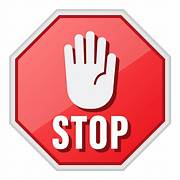
Stop Sign
A red octagon indicating that drivers must come to a complete stop at the designated stop line.
Tagalog : Isang pulang octagon na nagpapahiwatig na ang mga driver ay dapat huminto sa itinalagang stop line. -
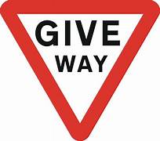
Give Way Sign
With this sign, drivers are expected to yield to the vehicles on the right of the intersection.
Tagalog : Sa sign na ito, inaasahang susuko ang mga driver sa mga sasakyan sa kanan ng intersection.
-
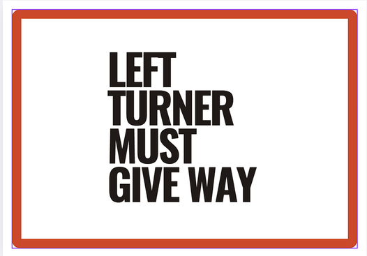
Left Turner Must Give Way
When turning left at intersections, you only have the right of way if you use the left turn signal at least 30 meters before reaching the intersection.
If there are cars arriving or already too close to the intersection, yield, give allowance, or make a full stop and let them pass.
Tagalog : Kapag lumiko pakaliwa sa mga intersection, ikaw lamang ang may karapatan kung gagamitin mo ang left turn signal nang hindi bababa sa 30 metro bago maabot ang intersection.
Kung may mga sasakyan na paparating o masyadong malapit na sa intersection, mag-yield, magbigay ng allowance, o huminto nang buo at hayaang makaraan sila. -
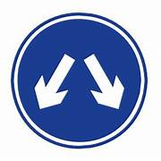
Pass either side
Signs indicating that vehicles may pass on either side.
Tagalog : Mga palatandaan na nagpapahiwatig na ang mga sasakyan ay maaaring dumaan sa alinmang panig. -
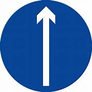
No Turns
Signs indicating that turns are not allowed.
Tagalog : Mga palatandaan na nagpapahiwatig na ang mga liko ay hindi pinapayagan. -
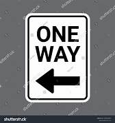
One Way
Signs indicating that traffic flows only in the direction shown.
Tagalog : Mga palatandaan na nagpapahiwatig na ang trapiko ay dumadaloy lamang sa ipinakitang direksyon. -
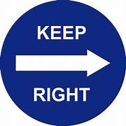
Keep Right
Signs indicating that drivers should keep to the right side of the road.
Tagalog : Mga palatandaan na nagpapahiwatig na ang mga driver ay dapat manatili sa kanang bahagi ng kalsada. -
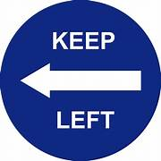
Keep Left
Signs indicating that drivers should keep to the left side of the road.
Tagalog : Mga palatandaan na nagpapahiwatig na ang mga driver ay dapat manatili sa kaliwang bahagi ng kalsada. -
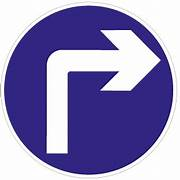
All Traffic Must Turn Right
Signs indicating that all traffic must turn right at the intersection.
Tagalog : Mga palatandaan na nagpapahiwatig na ang lahat ng trapiko ay dapat lumiko sa kanan sa intersection. -
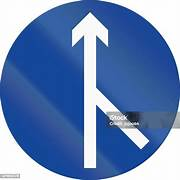
Merging Traffic
Signs indicating that traffic from different lanes must merge.
Tagalog : Mga palatandaan na nagpapahiwatig na ang trapiko mula sa iba't ibang mga lane ay dapat mag-merge. -
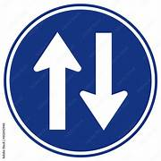
Two Way Traffic
Signs indicating that the road is open to traffic in both directions.
Tagalog : Mga palatandaan na nagpapahiwatig na ang kalsada ay bukas sa trapiko sa parehong direksyon. -
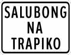
Salubong Na Trapiko
Signs indicating that traffic is merging from different directions.
Tagalog : Mga palatandaan na nagpapahiwatig na ang trapiko ay nagme-merge mula sa iba't ibang direksyon. -
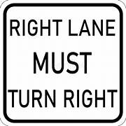
Right Lane Must Turn Right
Signs indicating that traffic in the right lane must turn right.
Tagalog : Mga palatandaan na nagpapahiwatig na ang trapiko sa kanang lane ay dapat lumiko sa kanan. -
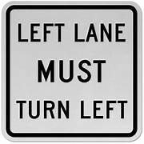
Left Lane Must Turn Left
Signs indicating that traffic in the left lane must turn left.
Tagalog : Mga palatandaan na nagpapahiwatig na ang trapiko sa kaliwang lane ay dapat lumiko sa kaliwa.
Direction Signs
Prohibitive/Restrictive Signs
Signs indicating that all vehicles may not enter.
Tagalog : Mga palatandaan na nagpapahiwatig na ang lahat ng mga sasakyan ay hindi maaaring pumasok.
Signs indicating that cars may not enter.
Tagalog : Mga palatandaan na nagpapahiwatig na ang mga kotse ay hindi maaaring pumasok.
Signs indicating that jeeps may not enter.
Tagalog : Mga palatandaan na nagpapahiwatig na ang mga jeep ay hindi maaaring pumasok.
Signs indicating that buses may not enter.
Tagalog : Mga palatandaan na nagpapahiwatig na ang mga bus ay hindi maaaring pumasok.
Signs indicating that trucks may not enter.
Tagalog : Mga palatandaan na nagpapahiwatig na ang mga trak ay hindi maaaring pumasok.
Signs indicating that bikes may not enter.
Tagalog : Mga palatandaan na nagpapahiwatig na ang mga bisikleta ay hindi maaaring pumasok.
Signs indicating that Motor vehicles may not enter.
Tagalog : Mga palatandaan na nagpapahiwatig na ang mga motor ay hindi maaaring pumasok.
Signs indicating that tricycles may not enter.
Tagalog : Mga palatandaan na nagpapahiwatig na ang mga traysikel ay hindi maaaring pumasok.
Signs indicating that vehicles with trailers may not enter.
Tagalog : Mga palatandaan na nagpapahiwatig na ang mga sasakyan na may mga trailer ay hindi maaaring pumasok.
Signs indicating that animal-drawn vehicles may not enter.
Tagalog : Mga palatandaan na nagpapahiwatig na ang mga sasakyan na hinihila ng hayop ay hindi maaaring pumasok.
Signs indicating that pushcarts may not enter.
Tagalog : Mga palatandaan na nagpapahiwatig na ang mga pushcart ay hindi maaaring pumasok.
Signs indicating that pedestrian-crossing may not enter.
Tagalog : Mga palatandaan na nagpapahiwatig na ang pedestrian-crossing ay hindi maaaring pumasok.
Signs indicating that pedestrians should use the overpass.
Tagalog : Mga palatandaan na nagpapahiwatig na ang mga pedestrian ay dapat gumamit ng overpass.
Signs indicating that pedestrians must use the pedestrian-crossing.
Tagalog : Mga palatandaan na nagpapahiwatig na ang mga pedestrian ay dapat gumamit ng pedestrian-crossing.
Signs indicating that no right turn is allowed.
Tagalog : Mga palatandaan na nagpapahiwatig na walang pinapayagang liko sa kanan.
Signs indicating that no left turn is allowed.
Tagalog : Mga palatandaan na nagpapahiwatig na walang pinapayagang liko sa kaliwa.
Signs indicating that U-turns are not allowed.
Tagalog : Mga palatandaan na nagpapahiwatig na ang mga U-turn ay hindi pinapayagan.
Signs indicating that overtaking other cars is not allowed.
Tagalog : Mga palatandaan na nagpapahiwatig na ang pag-overtake sa ibang mga kotse ay hindi pinapayagan.
Speed Signs
Signs indicating the maximum speed limit allowed in an specific location.
Tagalog : Mga palatandaan na nagpapahiwatig ng pinakamataas na limitasyon ng bilis na pinapayagan sa isang tiyak na lokasyon.
Signs indicating the end of the maximum speed limit zone allowed in a specific location.
Tagalog : Mga palatandaan na nagpapahiwatig ng pagtatapos ng maximum speed limit zone na pinapayagan sa isang tiyak na lokasyon.
Signs indicating the Speed Limit Derestriction Sign.
Tagalog : Mga palatandaan na nagpapahiwatig ng Speed Limit Derestriction Sign.
Signs indicating the minimum speed Restriction in a specific location.
Tagalog : Mga palatandaan na nagpapahiwatig ng minimum speed Restriction sa isang tiyak na lokasyon.
Parking and Stopping Signs
Signs indicating the hours during which loading is permitted.
Tagalog : Mga palatandaan na nagpapahiwatig ng mga oras kung kailan pinapayagan ang paglo-load.
Signs indicating the hours during which parking is restricted.
Tagalog : Mga palatandaan na nagpapahiwatig ng mga oras kung kailan ang paradahan ay limitado.
Signs indicating the hours during which loading and unloading is permitted.
Tagalog : Mga palatandaan na nagpapahiwatig ng mga oras kung kailan pinapayagan ang paglo-load at pag-unload.
Signs indicating that waiting is not permitted.
Tagalog : Mga palatandaan na nagpapahiwatig na ang paghihintay ay hindi pinapayagan.
Signs indicating that the intersection must remain clear.
Tagalog : Mga palatandaan na nagpapahiwatig na ang intersection ay dapat manatiling malinaw.
Signs indicating that parking is not permitted.
Tagalog : Mga palatandaan na nagpapahiwatig na ang paradahan ay hindi pinapayagan.
Signs indicating that parking is not permitted in both directions, Parked vehicles will be towed away.
Tagalog : Mga palatandaan na nagpapahiwatig na ang paradahan ay hindi pinapayagan sa parehong direksyon, ang mga naka-park na sasakyan ay itatanggal.
Signs indicating that parking is not permitted during the specified days.
Tagalog : Mga palatandaan na nagpapahiwatig na ang paradahan ay hindi pinapayagan sa mga tinukoy na araw.
Signs indicating that stopping is not permitted at any time.
Tagalog : Mga palatandaan na nagpapahiwatig na ang paghinto ay hindi pinapayagan anumang oras.

Signs indicating that parking is not permitted in the area designated for public buses to stop.
Tagalog : Mga palatandaan na nagpapahiwatig na ang paradahan ay hindi pinapayagan sa lugar na itinalaga para sa mga pampublikong bus upang huminto.
Signs indicating that parking is not permitted in the area designated for public jeepneys.
Tagalog : Mga palatandaan na nagpapahiwatig na ang paradahan ay hindi pinapayagan sa lugar na itinalaga para sa mga pampublikong jeepney.
Miscellaneous Signs
Signs indicating that vehicles exceeding 2 meters in width are not allowed to enter.
Tagalog : Mga palatandaan na nagpapahiwatig na ang mga sasakyan na lumalampas sa 2 metro ang lapad ay hindi pinapayagang pumasok.
Signs indicating that vehicles exceeding 2 meters in height are not allowed to enter.
Tagalog : Mga palatandaan na nagpapahiwatig na ang mga sasakyan na lumalampas sa 2 metro ang taas ay hindi pinapayagang pumasok.
Signs indicating that vehicles exceeding 10 meters in length are not allowed to enter.
Tagalog : Mga palatandaan na nagpapahiwatig na ang mga sasakyan na lumalampas sa 10 metro ang haba ay hindi pinapayagang pumasok.
Signs indicating that vehicles exceeding 5 tons in weight are not allowed to enter.
Tagalog : Mga palatandaan na nagpapahiwatig na ang mga sasakyan na lumalampas sa 5 tonelada ang timbang ay hindi pinapayagang pumasok.
Signs indicating that vehicles exceeding 2 tons in gross axle load are not allowed to enter.
Tagalog : Mga palatandaan na nagpapahiwatig na ang mga sasakyan na lumalampas sa 2 tonelada ang gross axle load ay hindi pinapayagang pumasok.
Signs indicating that wearing seatbelt use is mandatory.
Tagalog : Mga palatandaan na nagpapahiwatig na ang pagsusuot ng seatbelt ay sapilitan.
Signs indicating that blowing of horns is not permitted.
Tagalog : Mga palatandaan na nagpapahiwatig na ang pagtunog ng busina ay hindi pinapayagan.
Signs indicating that drivers should be cautious of pedestrian crossings.
Tagalog : Mga palatandaan na nagpapahiwatig na ang mga driver ay dapat mag-ingat sa mga pedestrian crossing.
Signs indicating that there may be children crossing the road.
Tagalog : Mga palatandaan na nagpapahiwatig na maaaring may mga batang tumatawid sa kalsada.
Signs indicating that the lane is designated for bicycle use.
Tagalog : Mga palatandaan na nagpapahiwatig na ang lane ay itinalaga para sa paggamit ng bisikleta.
Signs indicating that there may be persons with disabilities in the area.
Tagalog : Mga palatandaan na nagpapahiwatig na maaaring may mga taong may kapansanan sa lugar.